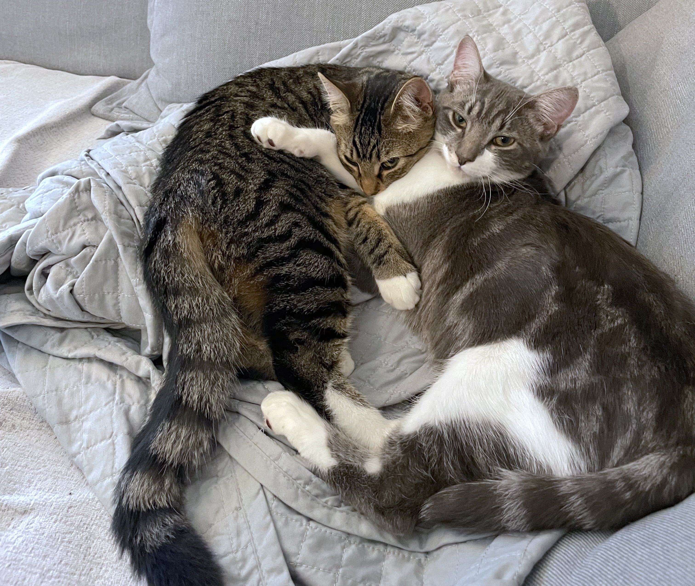

One of my strongest qualities is my attention to detail. My first internship was in the marketing department of a financial investment company, where I reviewed and prepared numerous materials for clients. This experience honed my attention to detail and strengthened my ability to deliver high-quality work.
I also possess strong communication and problem-solving skills. I am curious about the new technologies and always ready for the challenges.
If you'd like a glimpse of how my past managers viewed my work and personality, feel free to check out their recommendations on my LinkedIn.

My two beautiful cats!!
I love playing games — The Legend of Zelda: Breath of the Wild is one of my favorites.
Playing the piano helps me relax and unwind during my free time.